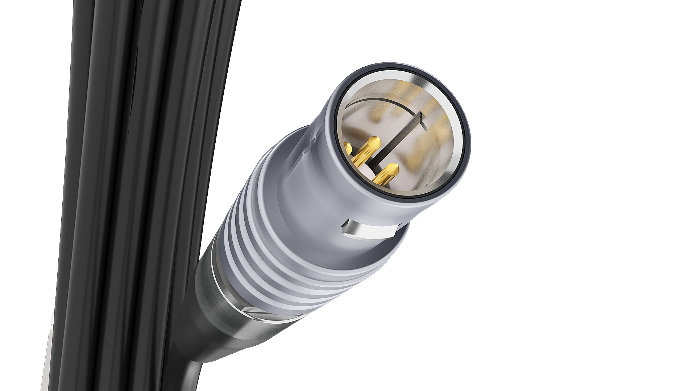
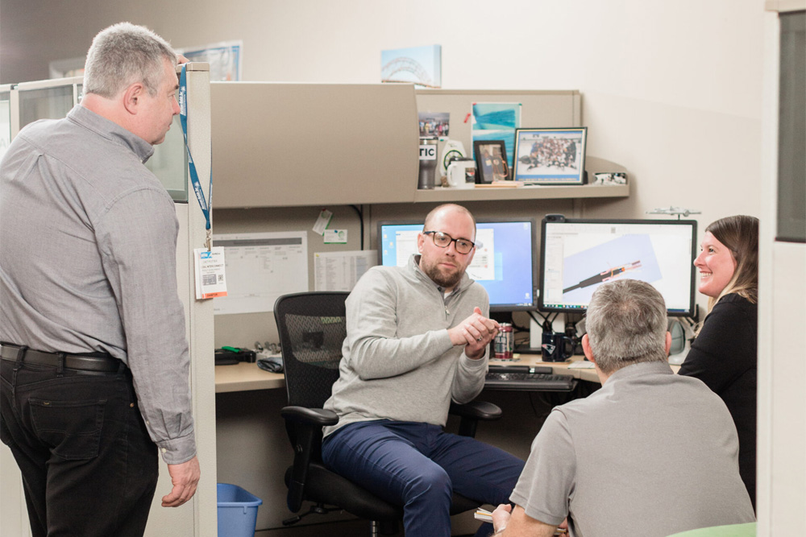
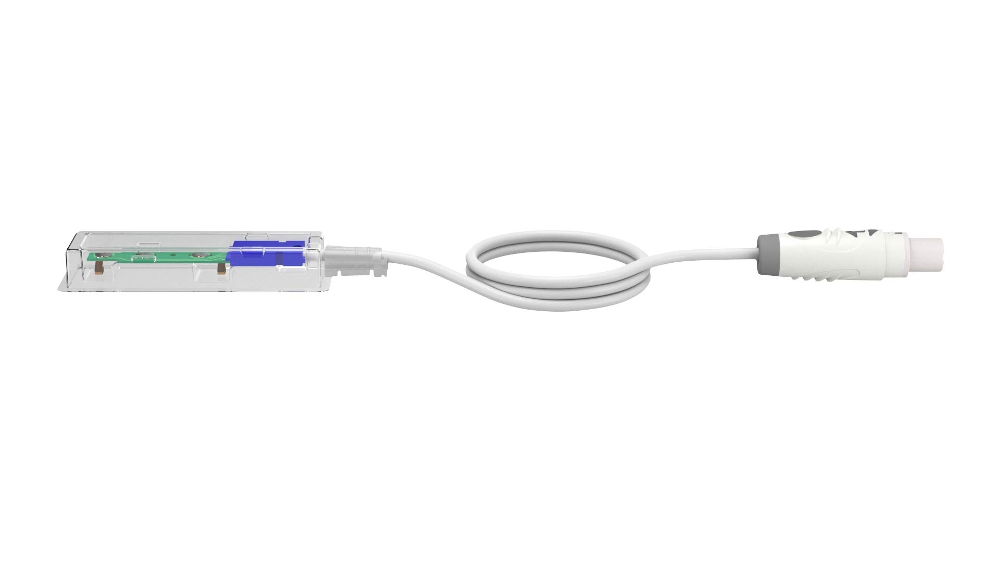

Global Supply Chain Management
Most OEMs don't need a parts vendor — they need someone who can manage the complexity of sourcing across multiple countries, qualify suppliers to medical standards, and protect production continuity when something goes wrong halfway around the world. That's what Gii's supply chain infrastructure is built to do.
- Multi-country component sourcing and supplier qualification
- Dual-sourcing strategies to eliminate single points of failure
- Tariff management and trade compliance across US, Costa Rica, and Asia
- Long-lead-time component management and strategic buffer inventory
- Vendor managed inventory (VMI) programs for high-volume programs
- Supplier audits and ongoing performance monitoring

Manufacturing Transfer Management
Transferring a medical device program — whether from OEM internal production, an outgoing supplier, or another CMO — is one of the most operationally complex things an OEM team can do. Gii has executed these transfers dozens of times. We know what goes wrong, where the documentation gaps appear, and how to keep production running while a transfer is in progress.
- Full engineering review of existing processes, tooling, and designs
- Process revalidation and capability studies at the receiving facility
- Supply chain remapping and vendor requalification
- Regulatory documentation support — DHR, DHF, change control
- First-article inspection and lot acceptance procedures
- Zero-disruption transfer methodology to protect your production continuity

Regulatory & Compliance Navigation
For a medical device OEM, a supplier that can't keep up with your regulatory requirements isn't a partner — it's a liability. Gii's quality systems are built specifically for the documentation burden of medical device manufacturing, and our team understands the regulatory frameworks that govern what we build.
- FDA-registered manufacturing with full Quality Management System
- ISO 13485 certified quality management across the network
- IEC 60601 electrical safety compliance for powered devices
- DHR and DHF documentation built to support your regulatory submissions
- Robust change control processes that don't slow production
- Audit-ready facilities — customer and regulatory audits welcomed

Nearshore & Offshore Cost Strategy
Not every program should be built in the same place. Gii's global footprint lets us match each program to the manufacturing location that delivers the best combination of quality, cost, and supply chain risk — and we manage that complexity so you don't have to. In today's tariff environment, knowing where and how to build is itself a competitive advantage.
- Strategic facility selection across US, Costa Rica, and Asia
- Costa Rica nearshore: same time zone, audit-accessible, no China tariff exposure
- Total landed cost modeling — not just unit price
- Tariff risk assessment and mitigation strategy for your BOM
- Dual-region production for supply chain resilience
- On-site customer audit access at all manufacturing locations

Program Management at Scale
Running a complex medical device program across multiple suppliers, time zones, and regulatory environments requires organizational discipline that most companies underestimate. Gii provides a single point of accountability from prototype through volume production — so your team isn't spending its time coordinating between vendors.
- Single point of contact across engineering, quality, and supply chain
- Multi-supplier coordination and sub-tier management
- Cross-time-zone program management without quality or schedule risk
- Prototype through high-volume production continuity
- Proactive communication and escalation protocols
- Regular program reviews with full visibility into status and risk

Cost Reduction as an Organizational Discipline
Any supplier can quote a lower price. Few can systematically find and eliminate the cost that's hidden in your BOM, your connector specifications, and your production process. At Gii, cost reduction isn't a project — it's how our engineering culture operates. It's built into every DFM review, every BOM audit, and every supplier negotiation we run on your behalf.
- Design for Manufacturability (DFM) reviews that find real savings
- BOM optimization — identifying over-specified components and materials
- Component consolidation across programs to build purchasing leverage
- Make vs. buy analysis for connector and cable subassemblies
- Continuous improvement programs in volume production
- Open-book cost modeling so you understand where every dollar goes